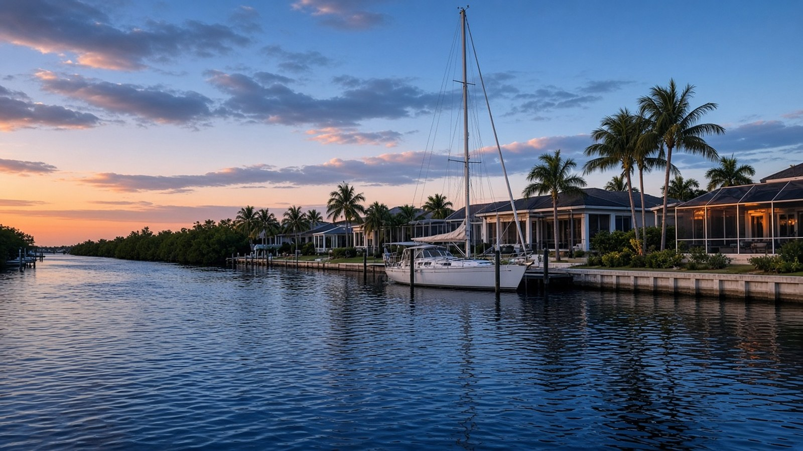

Living in Punta Gorda Isles

Punta Gorda Isles, Punta Gorda & Charlotte County, FL
Quick Answer
Punta Gorda Isles is a city-managed canal district.
Punta Gorda Isles is a canal community inside the city of Punta Gorda, built from the late 1950s through the mid 1970s. The city maintains about 91 miles of seawall and dredges about 45 miles of canals through a canal maintenance assessment. That arrangement is one of the biggest differences between here and other waterfront markets.
If you are searching for homes in Punta Gorda Isles, start with the canal, the seawall, and the assessment, then look at the house.
What Punta Gorda Isles actually is
Punta Gorda Isles, usually shortened to PGI, is one of two canal districts inside the City of Punta Gorda. The other is Burnt Store Isles. According to the city's Public Works Department, PGI was constructed from the late 1950s through the mid 1970s and has about 45 miles of canals, or about 90 miles of seawall. Burnt Store Isles was built in the mid 1970s and has about 9 miles of canals.
Because PGI is inside the city limits, it comes with city services, city rules for boats and waterways, and the city's canal program. The city's Chapter 6 ordinance on boats, docks, and waterways governs the use of waterways within city limits. Our Punta Gorda Isles area page gives the neighborhood overview, and the Punta Gorda real estate guide explains how PGI fits the rest of the city.
A few facts to put PGI in context
PGI is not its own census place, so the best public demographic numbers are for the city of Punta Gorda as a whole. They describe the city, not the district. Canal and seawall figures come from the city.
| Punta Gorda Isles: Context Figures | ||
|---|---|---|
| Topic | Figure | How to read it |
| PGI canals | About 45 miles | City of Punta Gorda Public Works. The district also has about 91 miles of seawall. |
| Burnt Store Isles canals | About 9 miles | City of Punta Gorda Public Works. About 18 miles of seawall. |
| Canal district created | July 3, 1996 | The city created the PGI Canal Maintenance Assessment District by Ordinance 1156-96, under Florida Statutes section 189.02, to maintain canals, waterways, navigable channels, and bulkheads. |
| Seawall replacement time | About 3 to 4 weeks | City estimate for a replacement at one residence, weather permitting. The city and its contractors give advance notice, including guidance on docks, boat lifts, and landscaping. |
| City population | 20,278 | U.S. Census Bureau, American Community Survey (ACS) 5-year estimates for 2020-2024, Punta Gorda city. |
| Median owner-reported home value | $518,100 | ACS 2020-2024 median value of owner-occupied homes in the city, with a margin of error of about $41,000. This is what owners estimated their homes were worth, not a median sale price, and it covers the whole city, not only PGI. |
| Seasonal housing units | 19.8 percent | Share of all housing units held for seasonal, recreational, or occasional use, ACS 2020-2024, city of Punta Gorda. Charlotte County overall is 15.7 percent. |
| Median year built | 1994 | ACS 2020-2024 for the city. The PGI canals themselves date to the late 1950s through the mid 1970s, so ask for the year and permit history on any house. |
Sources: City of Punta Gorda Public Works and canal program pages; U.S. Census Bureau ACS 2020-2024. City figures are context only, not a substitute for recent comparable sales on a specific canal.
Key Takeaways
- PGI has about 45 miles of canals and about 91 miles of seawall, maintained by the City of Punta Gorda through a canal maintenance assessment district created in 1996.
- The city performs an annual seawall assessment, typically in winter at low tide, and uses it to prioritize replacements. A city seawall replacement at one residence typically takes about three to four weeks.
- Each canal district has its own budget funded by a non-ad valorem assessment, reviewed by a resident canal advisory committee, with the final amount adopted at the first budget public hearing in September.
- Property owners can contract their own dredging near a private dock at their own expense. The city dredges the main system.
- The ACS 2020-2024 median owner-reported home value for the city is $518,100. It is a survey figure, not a median sale price, and it covers the whole city.
- Charlotte County had 2,856 active residential listings on a typical day in October 2026, per Florida Gulf Coast University. That is county inventory, not a PGI count.
How the city canal program works
In most waterfront markets, the owner is responsible for the seawall. In PGI, the City of Punta Gorda's Canal Maintenance Division handles it. The city says the program covers dredging, seawall maintenance and replacement, and mangrove trimming, and that it is funded through canal maintenance district assessments. Each of the city's two canal districts has its own budget, overseen by a canal advisory committee of district residents, with the final assessment adopted at the first budget public hearing in September.
Every year the city assesses the seawall infrastructure. City staff motor through the canals during low winter tides, inventory the condition of the walls and caps, and use that data to prioritize replacements and track potential failures. The city's maintenance program page lists the zones for the current assessment season, so you can see whether a street has recently been inspected.
That does not mean a PGI buyer ignores the seawall. It means the questions change. Ask when the wall in front of the house was installed or last replaced, whether it is on the city's replacement schedule, and what the current canal assessment is. Costs change, so this guide will not invent an assessment amount. Ask the city for the district's current figure, and ask the seller for a copy of the most recent bill.
Sailboat access and what to check on one canal
PGI is known for sailboat canals, but not every lot is a sailboat lot. Access depends on the canal's depth, the route and bridge clearances between the lot and open water, and the run to Charlotte Harbor. The city's canal dredging program keeps the system navigable, and property owners can hire their own dredging near a private dock at their expense, but neither replaces checking the actual route for the actual boat.
Before you write an offer, ask for the mast height or airdraft and keel depth of the boat you own or plan to buy, then confirm them against the canal you are considering. Ask whether the lift and dock are permitted, and see Charlotte County's and the city's permit rules for any new work. Our waterfront buying guide walks through sailboat versus powerboat access and what each means for value.
Living in PGI day to day
PGI is inside the city, a short drive from downtown, where the Harborwalk, parks, and restaurants are. The Harborwalk is a 2.5-mile waterfront path along Charlotte Harbor that connects Laishley Park, Gilchrist Park, and Fishermen's Village, according to the city. Our things to do in Punta Gorda guide covers it. Buyers who want water access and walkable amenities in the same place often compare PGI with the Historic District, and those who want a marina setting look at Burnt Store Marina.
Seasonal use is part of the picture. In the ACS data, 19.8 percent of housing units in the city are held for seasonal, recreational, or occasional use, compared with 15.7 percent for the county. That can affect how busy a canal feels across the year and how you plan for the house when you are away.
Buying in PGI: a few local realities
Insurance and flood zones belong in the first conversation. FEMA's Risk Rating 2.0 prices flood insurance using factors such as distance to flooding sources, ground elevation, first-floor height, foundation type, and construction. An elevation certificate is optional, but FEMA may use it to establish a more favorable first-floor height. Ask whether the house has one, and get a quote early.
Storm history. Hurricane Ian made a second landfall near Punta Gorda on September 28, 2022, according to the National Hurricane Center's final report, and Charley came ashore in the same area on August 13, 2004. Ask about roof age, wind-mitigation features, and repairs, and ask the seller what happened to the seawall, dock, and lift.
Homestead. If the home will be your primary residence, ask the Charlotte County Property Appraiser about Florida's homestead exemption, up to $50,000 of assessed value, with the first $25,000 applying to all property taxes. Save Our Homes limits annual increases to the lesser of 3 percent or the change in the Consumer Price Index, which is 2.7 percent for 2026. You must own and live in the home on January 1 and apply by March 1.
Price context. The FHFA house-price index for the Punta Gorda metro area was 391.34 in the second quarter of 2026, down 0.2 percent from a year earlier and 7.7 percent below the second quarter of 2024. It is a repeat-transaction index for the whole metro area, not a PGI sale price. Ask for recent comparable sales on a canal with the same depth, width, and seawall condition. When you are ready, see the buyers page, and sellers can start with a home valuation.
Frequently asked questions
Is Punta Gorda Isles inside the city of Punta Gorda?
Yes. PGI is one of two canal districts within the City of Punta Gorda, along with Burnt Store Isles. Boats, docks, and waterways are governed by the city's Chapter 6 ordinance.
How many miles of canals does Punta Gorda Isles have?
According to the City of Punta Gorda, about 45 miles of canals and inlets and about 91 miles of seawall. The district was constructed from the late 1950s through the mid 1970s.
Who maintains the seawalls in PGI?
The City's Canal Maintenance Division maintains and replaces city-maintained seawalls, funded by canal maintenance assessments. Always confirm responsibility for the specific property, and ask the seller for the latest assessment bill.
What is the PGI canal assessment?
It is a non-ad valorem assessment that funds seawall maintenance and replacement, canal dredging, and mangrove trimming in the district. The city adopts the amount at the first budget public hearing each September. Ask the city for the current figure.
Can every PGI home handle a sailboat?
No. Access depends on canal depth, clearances between the lot and open water, and the boat itself. Confirm the route for your boat's mast height and keel depth before you write an offer.
How long does a seawall replacement take?
The city says a replacement at one residence normally takes about three to four weeks, weather permitting. The city and its contractors notify the owner in advance about sprinklers, utilities, docks, lifts, and landscaping.
How is PGI different from Burnt Store Isles?
Both are city canal districts. The city's figures put PGI at about 45 miles of canals and Burnt Store Isles at about 9 miles. PGI was built from the late 1950s through the mid 1970s, and Burnt Store Isles in the mid 1970s.
Talk with The Helgemo Team
If you are weighing Punta Gorda Isles against other Punta Gorda waterfront areas, talk with a team that knows the canals and the seawall program in person. Call or text The Helgemo Team at (941) 770-2275, or visit the contact page. The office is at 320 Cross Street, Punta Gorda, Florida 33950. You can also meet Brian Helgemo or read more about the team.
Related Reading
- Punta Gorda Isles area page
- Buying a waterfront home in Punta Gorda
- A guide to condos in Punta Gorda
- Things to do in Punta Gorda, FL
- A Local Guide to Punta Gorda Real Estate
Thinking About Buying or Selling?
If you are buying, selling, or just trying to understand a canal neighborhood, talk with a team that works this market in person. Call or text The Helgemo Team at (941) 770-2275.
Sources: City of Punta Gorda, Canals; City of Punta Gorda, Canal Maintenance: Punta Gorda Isles; City of Punta Gorda, Canal Maintenance Program; City of Punta Gorda, Harborwalk; U.S. Census Bureau, American Community Survey 2020-2024 estimates for Punta Gorda city, via Census Reporter; U.S. Census Bureau, American Community Survey 2020-2024 estimates for Charlotte County, via Census Reporter; FEMA, NFIP Risk Rating 2.0 pricing approach; National Hurricane Center, Tropical Cyclone Report: Hurricane Ian; National Hurricane Center, Tropical Cyclone Report: Hurricane Charley; Florida Department of Revenue, Property Tax Information for Homestead Exemption; Florida Department of Revenue, Save Our Homes; Federal Housing Finance Agency all-transactions House Price Index, Punta Gorda, FL metropolitan area, Q2 2026; Florida Gulf Coast University Regional Economic Research Institute, Charlotte County active residential listings, October 2026. Citywide, metro, and county figures are context only, not a substitute for recent comparable sales on a specific canal. Data and sources reviewed November 10, 2026.